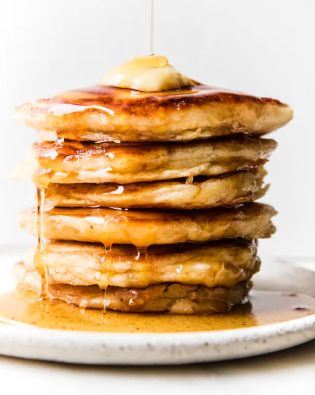

The Starving Artist Cookbook
Empanadas
Total Time 25 min
Make 6 25 min
Author The Modern Proper

Ingredients
- Ground Beef 80/20
- Potatoes one diced super small
- Seasonings: Fresh garlic, cumin, chili powder, cinnamon
- Empanada dough: You’ll need flour, water, butter and an egg
for our homemade dough, or you can use homemade pizza
Directions
- Preheat the oven to 375°F with a rack in the center
position. Line a rimmed sheet pan with parchment paper.
Remove the dough from the refrigerator and divide it into
10 equal pieces (about 2.2-ounces each). On a lightly
floured surface, roll each piece into a thin circle
about 7-inches in diameter.
- Arrange the empanadas on the prepared sheet pan. Brush the
tops with the remaining egg wash. Bake for 30 to
35 minutes, or until deep golden brown. Let cool 5 minutes
before serving.
Buttermilk Pancakes
Total Time 25 min
Make 6 25 min
Author The Modern Proper

Ingredients
- All-purpose flour
- Baking powder
- Baking soda
- Sugar
- Sea salt
- Buttermilk
- Eggs
- Unsalted butter
- Vanilla extract
Directions
- Heat a griddle to 350°F or a large skillet over medium heat.
Add butter and cook until it melts and begins to bubble.
Use a spatula to spread the melted butter evenly. Add
batter to the skillet or griddle using a ½ cup measuring
cup, placing the pancakes ½ -inch apart and being careful
not to overcrowd. When bubbles begin to form, lift with a
spatula and flip. Cook until golden brown on both sides.
Continue with the remaining batter.
- Serve warm along with your favorite toppings.
Six-Minute Eggs
Total Time 45 min
Make 3 25 min
Author The Modern Proper

Ingredients
Directions
- Gently lower six eggs into a pot of boiling water—use your
slotted spoon for this! It’s not worth burning your fingers,
or accidentally cracking an egg.
- Set your timer for six minutes — aka, the perfect
soft-boiled egg time. That’s all the soft-boiled egg cooking
time you need.
- Give eggs a quick ice bath to stop their cooking—you want
the yolks to stay jammy.
- Get cracking. See our tips below on how to crack into your
soft-boiled egg without eating bites of shell.